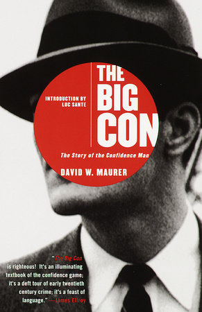

The Big Con, by Maurer
Sunday February 14, 2021
Published in 1940, WWI was "the War" (page 28), WWII was "the present European War" (page 311), there were thousand-dollar G-notes, and there was quite a lot of sexism and racism (throughout). Instead of emails from Nigerian princes, you might see a classified ad in the paper "For an honest, reliable businessman with $20,000 to invest for a large return." (page 115) There were elaborate plots! Would you really not fall for anything like that? What are people falling for these days? Quite a lot! What a world, what a world.

"After all, a look around present-day American institutions should suffice to demonstrate that the character in question has now fully emerged from the underworld and entered the mainstream, where he may be far less colorful and imaginative, but no less on the grift." (page xv, from the introduction by Luc Sante)
"Their methods differ more in degree than in kind from those employed by more legitimate forms of business." (page 3)
"The three big-con games, the wire, the rag, and the pay-off." (page 3)
- the wire: "A big-con game in which the insideman (passing as a Western Union official) convinces the mark that he can delay the race results going to the book-makers long enough for the mark to place a bet after the race is run. The roper makes a mistake and the mark loses."
- the rag: "An intricate big-con game very similar to the pay-off, except that stocks are used instead of races. The insideman poses as an agent for a broker's syndicate which is trying to break the bucket-shops. The mark profits on several investments, is sent for a large sum of money, and is fleeced."
- the pay-off: "The most lucrative of all big-con games, with touches running from $10,000 up, with those of $100,000 being common. It operates on the principle that a wealthy mark is induced to believe that he has been taken into a deal whereby a large racing syndicate is to be swindled. At first he pays with money furnished him by the confidence men, then is put on the send for all the cash he can raise, fleeced, and blown off. The pay-off (invented in 1906) evolved from the short-pay at the track and was fully developed by 1910, when the big stores appeared in many of the larger cities."
"Most marks come from the upper strata of society, which, in America, means that they have made, married, or inherited money. Because of this, they acquire status which in time they come to attribute to some inherent superiority, especially as regards matters of sound judgment in finance and investment. Friends and associates, themselves social climbers and sycophants, help to maintain this illusion of superiority. Eventually, the mark comes to regard himself as a person of vision and even of genius. Thus a Babbitt who has cleared half a million in a real-estate development easily forgets the part which luck and chicanery have played in his financial rise; he accepts his mantle of respectability without question; he naïvely attributes his success to sound business judgment. And any confidence man will testify that a real-estate man is the fattest and juiciest of suckers." (page 104)
"Religious scruples often seem to fail a mark at the crucial moment." (page 105)
""Larceny," or thieves' blood, runs not only in the veins of professional thieves; it would appear that humanity at large has just a dash of it–and sometimes more." (page 117)
"Many con men feel that marks have one characteristic in common–they are all liars." (page 118)
"Such institutions [schools for grifters] have long been the delight of fictioneers, but there is no reliable evidence to indicate that they ever functioned in the American underworld." (page 160)
The author references on page 164 "Dan the Dude's place at 28 W. 28th St." as being a hangout for con men. It has been otherwise known as well, it seems.
"When we think of cheese, it's Wisconsin; when we speak of oil, it's Pennsylvania; but with grifters, it's Indiana." (page 173)
"If fifty of them [con men] were selected and mixed indiscriminately with a group of successful business and professional men, all the correlations and statistics of a Hooton or a Lombroso would not set them apart; and, if a census of opinions upon politics, ethics, religion, or what-not were taken from the entire group, not even a Solomon could separate the sheep from the goats on the basis of their social views. If confidence men operate outside the law, it must be remembered that they are not much further outside than many of our pillars of society who go under names less sinister. They only carry to an ultimate and very logical conclusion certain trends which are often inherent in various forms of legitimate business." (pages 178-179)
"The short deck. A short-con game operated by a man who drops one card out of a deck he has offered to sell a mark very cheaply. They argue over whether or not it is a full deck, then bet. The mark thinks the deck is short one card, but the operator produces a full deck." (page 304)
"... a booming campaign of propaganda designed to rob the criminal of the sympathetic public opinion he has for so long enjoyed." (page 312, with "federal operatives" behind this campaign)
Just words
- appurtenance: an accessory or other item associated with a particular activity or style of living
- blackjack: a short, leather-covered, typically lead-filled club with a flexible handle, used as a weapon
- cackle-bladder: a means of faking someone's death through the use of a rubber bladder filled with fake blood
- chary: cautiously or suspiciously reluctant to do something
- charwoman: a woman employed to clean houses or offices
- chestnut: a joke or story that has become tedious because of its age and constant repetition
- chicane: (from context) down on one's luck, broke, from (in card games) a hand without cards of one particular suit; a void
- chicanery: the use of trickery to achieve a political, financial, or legal purpose
- connivance: willingness to secretly allow or be involved in wrongdoing, especially an immoral or illegal act (as "with the connivance of officials")
- crotchet: a perverse or unfounded belief or notion
- cupidity: greed for money or possessions
- demimonde: (in 19th-century France) the class of women considered to be of doubtful morality and social standing; a group of people considered to be on the fringes of respectable society
- depredation: an act of attacking or plundering
- diddle: cheat or swindle (someone) so as to deprive them of something; deliberately falsify (something)
- dissimulation: concealment of one's thoughts, feelings, or character; pretense
- doggerel: comic verse composed in irregular rhythm; verse or words that are badly written or expressed
- entomology: the branch of zoology concerned with the study of insects
- Faro: a specific old card game
- fourflusher: (a person who does this) (in poker) bluff when holding a weak hand, particularly a four flush; keep up a pretense; bluff
- Gesamtkunstwerk: a work of art that makes use of all or many art forms or strives to do so
- hare-lip: another term for cleft lip/palate
- hep: archaic or dialect term for "hip" in the sense of "wise"
- inveigh: speak or write about (something) with great hostility
- larceny: theft of personal property
- much lost motion: inefficiency, wasted busywork
- obdurate: stubbornly refusing to change one's opinion or course of action
- obstreperous: noisy and difficult to control
- picaresque: relating to an episodic style of fiction dealing with the adventures of a rough and dishonest but appealing hero
- piker: a gambler who makes only small bets; a stingy or cautious person
- plunger: a person who gambles or spends money recklessly
- Pullman: (car, couch, case) associated with a railroad car affording special comfort, especially one with sleeping berths
- q.v.: "quod videās" (Latin) "which see" after something to refer to additional information for
- ribald: referring to sexual matters in an amusingly coarse or irreverent way
- roister: enjoy oneself or celebrate in a noisy or boisterous way
- scapegrace: a mischievous or wayward person, especially a young person or child; a rascal
- shill: an accomplice of a hawker, gambler, or swindler who acts as an enthusiastic customer to entice or encourage others (also "shillaber")
- tout: a person soliciting custom or business, typically in an aggressive or bold manner; a person who offers racing tips for a share of any resulting winnings
- venire: an entire panel from which a jury is drawn
- winchell: a confidence trickster’s victim, a sucker (from the image of gossip writer Walter Winchell as ‘swallowing’ any story)